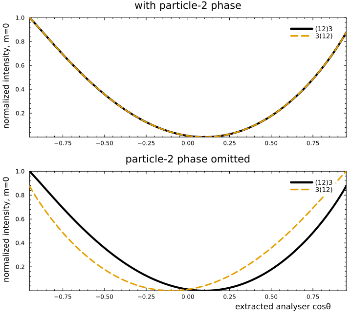

Why do we need the particle-2 phase?
The Jacob–Wick particle-2 phase
\[(-1)^{j_2-\lambda_2}\]
can look like a convention that should disappear from every observable. This tutorial gives a case where omitting it makes two child orderings of the same physical decay predict different angular distributions.
The smallest useful cascade
Consider a polarized spin-one parent decaying through a spin-one subsystem:
\[J=1 \longrightarrow (12)_{j=1}+3_{j=0}, \qquad (12)_{j=1}\longrightarrow 1_{j=0}+2_{j=0}.\]
At the outer vertex, use a pure $L=0,\ S=1$ coupling. The decay of the spin-one subsystem to two scalars is the polarization analyser.
We may write the same outer vertex in two orders:
\[((1,2),3) \qquad\text{or}\qquad (3,(1,2)).\]
The spin-one subsystem is child 1 in the first topology and child 2 in the second. The corresponding helicity couplings are therefore $H_{\lambda,0}$ and $H_{0,\lambda}$.
Why a missing sign is not harmless
For $j=J=S=1$, order the helicity amplitudes as
\[\mathbf h_\lambda = \begin{pmatrix}h_{-1}&h_0&h_{+1}\end{pmatrix}^{\mathsf T}.\]
Moving the vector from child 1 to child 2 introduces
\[t_\lambda=(-1)^{1-\lambda}h_\lambda, \qquad \mathbf t_\lambda = \operatorname{diag}(1,-1,1)\,\mathbf h_\lambda.\]
Thus omitting the particle-2 phase is equivalent to changing the sign of the zero-helicity component. In the $LS$ basis this is not an overall phase:
\[\begin{pmatrix} t_{01}\\ t_{11}\\ t_{21} \end{pmatrix} = \begin{pmatrix} \frac13 & 0 & \frac{10\sqrt2}{3}\\ 0 & 1 & 0\\ \frac{2\sqrt2}{15} & 0 & -\frac13 \end{pmatrix} \begin{pmatrix} h_{01}\\ h_{11}\\ h_{21} \end{pmatrix}.\]
A pure $S$ wave in one ordering would consequently be interpreted as
\[t_{01}=\frac13h_{01}, \qquad t_{21}=\frac{2\sqrt2}{15}h_{01}\]
in the other. The spurious $D$ wave does not carry the required $q^2$ threshold suppression.
A four-vector experiment
The angular transformation under a child exchange should not be guessed. It depends on the precise definitions of the helicity frames. Instead, we generate one set of four-vectors and let DecayChainKinematics extract the two sets of vertex angles independently.
At each scan point the calculation follows exactly the same sequence:
- generate a physical three-body event with
aligned_four_vectors; - apply small global $R_y$ and $R_z$ rotations to avoid polar and azimuthal coordinate singularities;
- pass the same four-vectors to
DecayChainKinematicsfor both topologies; - evaluate the same pure-$LS$ model;
- for the control curve, change only the particle-2 factor in the amplitude.
The vertex-angle path descends through ToHelicityFrameParticle2 when the propagating subsystem is child 2. Consequently, both the outer and analyser angles are results of the four-vector calculation.
Build the two orderings
The outer vertices are pure $(L,S)=(0,1)$ and the analyser vertex is $(L,S)=(1,0)$. Spins and angular momenta are passed as twice their physical values.
using CascadeDecays
using FourVectors
using HadronicLineshapes
using Statistics
using ThreeBodyDecays:
NoRecoupling,
RecouplingLS,
ThreeBodyMasses,
aligned_four_vectors,
x2σs
vector_first = DecayTopology(((1, 2), 3))
vector_second = DecayTopology((3, (1, 2)))
system = SystemSpins(0, 0, 0; two_h0 = 2)
propagator = Propagator(2, ConstantLineshape(1.0))
chain_vector_first = DecayChain(
vector_first,
system;
propagators = ((1, 2) => propagator,),
vertices = (
((1, 2), 3) => Vertex(RecouplingLS((0, 2))),
(1, 2) => Vertex(RecouplingLS((2, 0))),
),
)
chain_vector_second = DecayChain(
vector_second,
system;
propagators = ((1, 2) => propagator,),
vertices = (
(3, (1, 2)) => Vertex(RecouplingLS((0, 2))),
(1, 2) => Vertex(RecouplingLS((2, 0))),
),
)To construct the deliberately wrong control, resolve the outer $S$ wave into its three helicity components and cancel the package’s particle-2 phase. This does not change the four-vectors, extracted angles, rotations, propagator, or analyser vertex.
no_phase_components = ntuple(3) do i
two_λ = 2(i - 2)
DecayChain(
vector_second,
system;
propagators = ((1, 2) => propagator,),
vertices = (
(3, (1, 2)) => Vertex(NoRecoupling(0, two_λ)),
(1, 2) => Vertex(RecouplingLS((2, 0))),
),
)
end
particle_two_phase(two_λ) = (-1)^div(2 - two_λ, 2)
no_phase_coefficients =
ntuple(i -> inv(sqrt(3) * particle_two_phase(2(i - 2))), 3)Scan the analyser angle
For x2σs([xσ, xθ], ms; k=3), the second coordinate maps to $\cos\theta=2x_\theta-1$ in the $(12)$ rest frame. We hold $\sigma_{12}$ fixed and scan this coordinate. aligned_four_vectors(...; k=3) places spectator 3 on the negative $z$ axis; the subsequent small rotations move the event away from singular axes without changing any invariant.
The returned intensity uses the fixed parent spin projection $m=0$. Since all final particles are scalars, this is the middle element of the amplitude array.
ms = ThreeBodyMasses(1.0, 1.0, 1.0; m0 = 3.5)
fourvector(p) =
FourVector(Float64(p[1]), Float64(p[2]), Float64(p[3]); E = Float64(p[4]))
function event_at(z; decay_plane_azimuth = 0.0)
σs = x2σs([0.45, (z + 1) / 2], ms; k = 3)
aligned =
Tuple(fourvector(p) for p in aligned_four_vectors(σs, ms; k = 3))
return Tuple(
p |> Rz(decay_plane_azimuth) |> Ry(0.1) |> Rz(0.1)
for p in aligned
)
end
function study_point(z; decay_plane_azimuth = 0.0)
objects = event_at(z; decay_plane_azimuth)
x_first =
DecayChainKinematics(vector_first, objects; initial_frame = CurrentFrame())
x_second =
DecayChainKinematics(vector_second, objects; initial_frame = CurrentFrame())
A_first = vec(amplitude(chain_vector_first, x_first))
A_second = vec(amplitude(chain_vector_second, x_second))
A_second_no_phase = sum(
no_phase_coefficients[i] .*
vec(amplitude(no_phase_components[i], x_second))
for i in 1:3
)
return (
analyzer_cosθ = vertex_angles(x_first, 2).cosθ,
angles_first = x_first.vertex_angles,
angles_second = x_second.vertex_angles,
I_first = abs2(A_first[2]),
I_second = abs2(A_second[2]),
I_first_no_phase = abs2(A_first[2]),
I_second_no_phase = abs2(A_second_no_phase[2]),
I_first_unpolarized = sum(abs2, A_first),
I_second_no_phase_unpolarized = sum(abs2, A_second_no_phase),
amplitude_difference = maximum(abs, A_first - A_second),
)
end
zs = range(-0.95, 0.95; length = 121)
points = study_point.(zs)
scan_summary = (
analyzer_range = extrema(p.analyzer_cosθ for p in points),
max_correct_amplitude_difference =
maximum(p.amplitude_difference for p in points),
max_phase_omitted_intensity_difference =
maximum(abs(p.I_first_no_phase - p.I_second_no_phase) for p in points),
max_phase_omitted_unpolarized_difference = maximum(
abs(p.I_first_unpolarized - p.I_second_no_phase_unpolarized)
for p in points
),
)
@assert scan_summary.max_correct_amplitude_difference < 1e-12
@assert scan_summary.max_phase_omitted_intensity_difference > 0.1
@assert scan_summary.max_phase_omitted_unpolarized_difference < 1e-12
scan_summary(analyzer_range = (-0.9499999999999998, 0.9500000000000031), max_correct_amplitude_difference = 7.771561172376096e-16, max_phase_omitted_intensity_difference = 0.19864603816675624, max_phase_omitted_unpolarized_difference = 1.2212453270876722e-15)The correct complex amplitudes agree over the whole scan to floating-point precision, while omitting the phase produces an order-dependent polarized intensity.
For example, the extracted angles at $\cos\theta=-0.38$ are:
p = study_point(-0.38)
(
vector_first = p.angles_first,
vector_second = p.angles_second,
)(vector_first = [(cosθ = 0.9950041652780258, ϕ = 0.09999999999999995), (cosθ = -0.380000000000001, ϕ = 5.964133145680345e-17)], vector_second = [(cosθ = -0.9950041652780258, ϕ = -3.041592653589793), (cosθ = -0.3800000000000007, ϕ = -3.141592653589793)])No angular transformation was inserted into the amplitude. The different azimuths, including the particle-2 $\pi$ rotation, come from the two instruction paths.
The four curves
using Plots
theme(:boxed)
cosθs = [p.analyzer_cosθ for p in points]
normalization = maximum(p.I_first for p in points)
I_first = [p.I_first / normalization for p in points]
I_second = [p.I_second / normalization for p in points]
I_first_no_phase = [p.I_first_no_phase / normalization for p in points]
I_second_no_phase = [p.I_second_no_phase / normalization for p in points]
p_with = plot(
cosθs,
I_first;
label = "(12)3",
title = "with particle-2 phase",
ylabel = "normalized intensity, m=0",
linewidth = 4,
color = 1,
legend = :topright,
)
plot!(
p_with,
cosθs,
I_second;
label = "3(12)",
linewidth = 3,
linestyle = :dash,
color = 2,
)
p_without = plot(
cosθs,
I_first_no_phase;
label = "(12)3",
title = "particle-2 phase omitted",
xlabel = "extracted analyser cosθ",
ylabel = "normalized intensity, m=0",
linewidth = 4,
color = 1,
legend = :topright,
)
plot!(
p_without,
cosθs,
I_second_no_phase;
label = "3(12)",
linewidth = 3,
linestyle = :dash,
color = 2,
)
plot(p_with, p_without; layout = (2, 1), size = (720, 650))
The solid and dashed curves in the upper panel overlap. In the lower panel, only $3(12)$ changes because only that ordering places the vector in the particle-2 slot.
Warning — Do not average over the analyser azimuth.
The sign is visible through interference between helicity components. Uniform averaging over the analyser azimuth removes that interference in this example. We can verify this by rotating the aligned decay plane around the subsystem momentum before applying the small global rotations:
χs = range(0, 2π; length = 33)[1:(end - 1)]
averaged_difference = maximum(range(-0.9, 0.9; length = 21)) do z
azimuth_points =
[study_point(z; decay_plane_azimuth = χ) for χ in χs]
I1 = mean(p.I_first_no_phase for p in azimuth_points)
I2 = mean(p.I_second_no_phase for p in azimuth_points)
abs(I1 - I2)
end
@assert averaged_difference < 1e-12
averaged_difference5.551115123125783e-16The result is again at floating-point precision. Experimentally one should retain the analyser azimuth, select a nontrivial azimuthal region, or use an azimuthal moment such as a $\cos\phi$ weight.
Note — Why an unpolarized test also misses the problem.
Summing over all three parent spin projections gives the same total intensity with or without the sign. The Wigner-matrix completeness relation removes the interference that distinguishes $h_0$ from $-h_0$. A fixed spin projection, a nontrivial production density matrix, or interference with another amplitude is required.
Takeaway
The particle-2 phase is conventional, but it is not optional. It ensures that a change of child ordering changes only the representation of the amplitude—not its $LS$ interpretation, threshold behavior, or angular distribution.